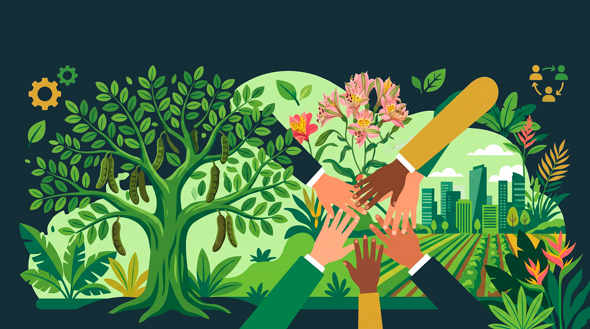
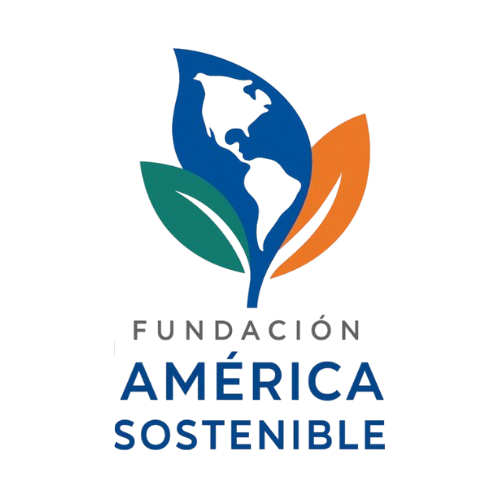
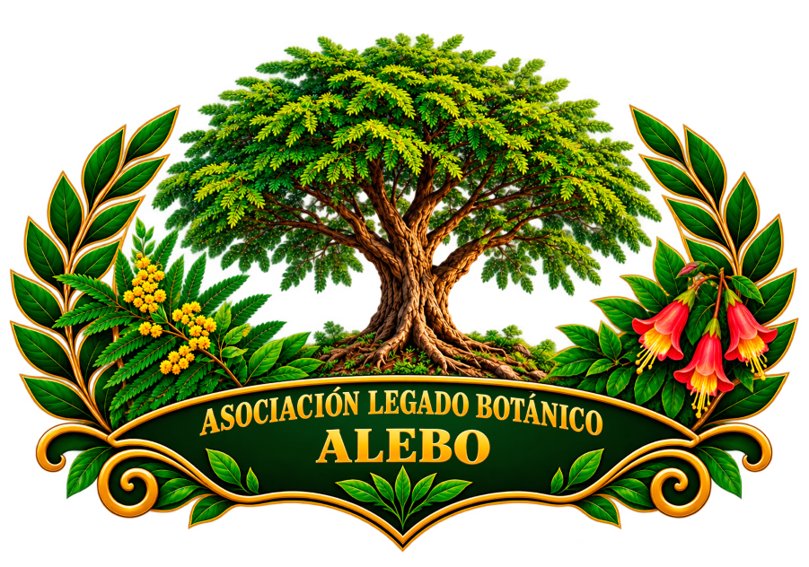
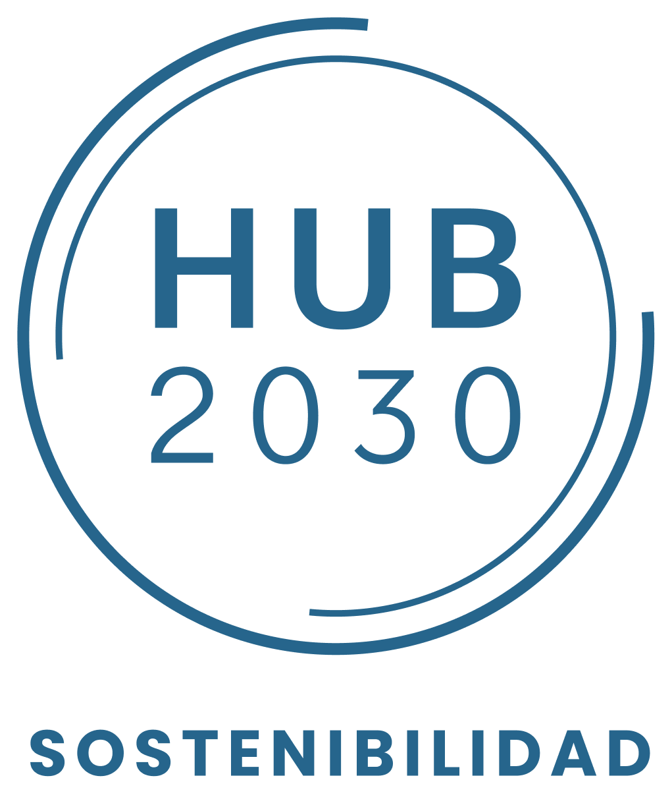

Arquitectura de Impacto y Restauración Ecosistémica
Programas de Escala para la Transición Ecológica en el Perú
"Impulsamos un modelo de restauración y desarrollo sostenible que conecta la visión estratégica continental de la Fundación América Sostenible (FAS) con la capacidad de acción e innovación botánica de ALEBO en el Perú."
Alianza Institucional de Impacto Continental



De la visión regional a la acción territorial
Todos los programas desarrollados por la Fundación América Sostenible (FAS) junto a HUB 2030 responden a una arquitectura de impacto diseñada para transformar dinámicas sistémicas en América Latina. Esta metodología se basa en cinco pilares de gestión integrada:
1. Objetivos Macro Ambiciosos
Metas cuantitativas continentales trazadas hacia el 2040 y 2050, alineadas rigurosamente a la agenda climática global.
2. Diseño y Narrativa Unificada
Marcos conceptuales robustos que elevan la acción local a causas de atracción de capital de impacto, cooperación e inversión ESG.
3. Herramientas y Canales Comunes
Plataformas de monitoreo, gobernanza y tecnologías de trazabilidad compartidas entre todos los nodos de la región.
4. Aterrizaje en Capítulos Nacionales
Adaptación de la estrategia continental a la realidad socioecológica de cada país, siendo Perú el capítulo pionero mediante la articulación con ALEBO.
5. Nutrición Multinivel (Proyectos y Subproyectos)
Una estructura donde cada intervención microrregional (cerros, escuelas, tramos de ríos) genera datos auditables que alimentan directamente las métricas e indicadores de avance del país y del continente.
Ejes de Transición Ecológica
En el Perú, este marco estratégico cobra vida a través de tres programas interconectados que abordan la matriz ecológica de nuestras metrópolis y regiones.
Senderos de Vida
Enfoque: Producción y plantación de flora nativa para generar corredores de biodiversidad en ámbitos urbanos, periurbanos y rurales.
Nodo Activo: Proyecto Forestal Cerro La Milla (+3,500 m² restaurados, +200 árboles de 26 especies).
Ríos de Vida
Enfoque: Bio-remediación, limpieza de plásticos y forestación de fajas marginales, transformando márgenes degradadas en infraestructura viva.
Nodo Activo: Proyecto de Restauración del Río Surco para revitalización ecosistémica y comunitaria.
Escuelas de Vida
Enfoque: Viveros escolares, biohuertos, jardín de polinizadores, compostaje y riego solar para laboratorios vivos de sostenibilidad.
Nodos Activos: I.E.I. Luis Enrique X e I.E. 2032 Manuel Scorza (SMP).
Programa Ríos de Vida: Conservación, Regeneración y Gobernanza Comunitaria de Cuencas y Corredores Fluviales
Diseñado por: Fundación América Sostenible (FAS) y HUB 2030
Operador y Articulador Local en Perú: Asociación Legado Botánico (ALEBO)
Ámbito de Intervención: Cuencas y corredores hídricos intraurbanos, periurbanos, interurbanos y rurales
Articulación Programática: Programa Marco Senderos de Vida | Escuelas de Vida
1. Visión General del Programa
Ríos de Vida es el eje hídrico de la estrategia de infraestructura verde y resiliencia climática impulsada por FAS y ALEBO. El programa transforma canales, ríos y fajas marginales degradadas en corredores biológicos vivos, seguros y comunitarios.
A través de la integración de bio-remediación, limpieza de residuos, reforestación con flora nativa ribereña, equipamiento urbano sostenible y participación ciudadana, Ríos de Vida recupera el tejido ecológico y social de las cuencas hídricas del Perú.
2. Pilares Estratégicos de Intervención
Pilar 1: Limpieza, Bio-remediación y Gestión de Residuos
• Descontaminación y Recuperación Física: Jornadas continuas de retiro de plásticos, residuos sólidos acumulados y escombros en fajas marginales y del cauce hídrico.
• Fito-remediación Natural: Establecimiento de islas flotantes biológicas y filtros vegetales con especies macrófitas nativas para la absorción de metales pesados y exceso de nutrientes.
• Centros de Acopio y Circularidad: Articulación con recicladores locales y programas de valorización de residuos orgánicos e inorgánicos extraídos de la cuenca.
Pilar 2: Forestación Ribereña con Flora Nativa
• Estabilización de Taludes y Márgenes: Control de erosión mediante andenería botánica y siembra de flora nativa con raíces profundas y resistentes a crecidas.
• Corredores Biológicos Fluviales: Plantación de árboles y arbustos nativos para bajar la temperatura del agua, reducir la evaporación y crear microclimas.
• Suministro Circular: Los plantines nativos y el compost utilizado son abastecidos directamente por la red del programa Escuelas de Vida y la red de viveros de Senderos de Vida - Perú.
Pilar 3: Mobiliario Urbano Sostenible e Infraestructura de Conectividad
• Equipamiento Ecológico: Instalación de bancas, senderos peatonales, miradores y puntos de descanso elaborados con plástico reciclado y madera de origen sostenible.
• Zonas de Encuentro Comunitario: Conversión de márgenes abandonados en parques lineales seguros para el disfrute y recreación comunitaria.
Pilar 4: Señalética Interpretativa, Ciencia Ciudadana y Gobernanza
• Cartelería Sensibilizadora: Paneles informativos e interpretativos sobre la historia de la cuenca, la biodiversidad retornada y las pautas para el cuidado colectivo.
• Monitoreo y Citizen Science: Muestreos comunitarios periódicos de la calidad del agua e identificación de fauna (aves, anfibios, insectos) vinculados a la App SdV.
• Comités de Cuenca Urbana: Creación de mesas de gobernanza local con vecinos, municipios y juntas de usuarios de agua.
3. Ámbitos y Escalas Territoriales
| Ámbito | Enfoque Territorial | Objetivo Principal |
|---|---|---|
| Intraurbano | Canales urbanos, acequias históricas y tramos de ríos dentro de la ciudad. | Reducción de contaminación, mitigación de olores y parques lineales urbanos. |
| Periurbano | Transición entre la ciudad y lomas/cerros áridos. | Control de escorrentías, retención de suelo y amortiguamiento de erosión. |
| Interurbano y Rural | Tramos conectores entre distritos, valles agrícolas y cuencas medias/altas. | Conservación de biodiversidad, protección de fuentes hídricas y agroecología. |
4. Nodo Piloto Activo: Río Surco (Lima, Perú)
El programa despega con su primer nodo demostrativo en el Río/Canal Surco en Lima, liderado en campo por Emiliano Cacciavillani y el equipo de ALEBO.
- Hito 01: Limpieza intensiva de plásticos y sedimentos en tramos prioritarios.
- Hito 02: Arbolado de faja marginal con especies nativas peruanas.
- Hito 03: Instalación del primer circuito de señalética ambiental e integración comunitaria.
5. Articulación Sistémica con Otros Programas
Ríos de Vida se entrelaza de manera directa en la matriz de impacto:
- Con Senderos de Vida: Cada ejemplar vegetal sembrado en las riberas y cada metro lineal de cuenca recuperado forma parte de las métricas de la meta marco continental de FAS.
- Con Escuelas de Vida: Los colegios aledaños a la cuenca participan activamente en las jornadas de monitoreo y suministran el compost escolar para las plantaciones ribereñas.
6. Modelo de Alianzas y Llamados a la Acción
Para Empresas
Financia la recuperación de un tramo del Río Surco o cuencas periurbanas. Recibe reportes auditados de plásticos retirados, metros de faja restaurada e indicadores de huella hídrica y CO2.
Para Municipios
Integra tu distrito al programa Ríos de Vida para transformar fajas marginales degradadas en espacio público verde y bio-remediado.
Para la Comunidad y Voluntariado
Participa en las jornadas de limpieza, siembra ribereña y talleres de ciencia ciudadana.
Escuelas de Vida: Red de Viveros, Biohuertos, Jardín de Polinizadores y Centros de Economía Circular Escolar
Diseñado por: Fundación América Sostenible y el RCE Cuenca del Plata junto a ALEBO para su implementación en Lima, Perú.
Sobre el Programa
'Escuelas de Vida' no es un taller ambiental aislado: es un sistema de gestión escolar integral que convierte patios, azoteas y áreas libres en nodos de producción vegetal, conservación de biodiversidad y valorización de recursos. Cada escuela opera mediante 4 pilares temáticos biológicos, potenciados por una capa tecnológica de energías limpias y riego autónomo.
🌿 Pilar 1 — Vivero Pedagógico y Forestal
Cultivo de árboles y arbustos nativos para la reforestación de la escuela y corredores urbanos. Los ejemplares producidos alimentan directamente el programa 'Senderos de Vida - Lima' impulsado por ALEBO y la Fundación América Sostenible junto a diversos aliados locales e internacionales.
🥗 Pilar 2 — Biohuerto Agroecológico y Módulos Verticales
Producción de hortalizas y plantas medicinales mediante diversas técnicas de cultivo de bajo costo con recipientes reciclados, promoviendo la soberanía alimentaria y la nutrición saludable.
🦋 Pilar 3 — Refugio de Polinizadores e Islas de Biodiversidad
Reservas naturales permanentes con flora nativa hospederas y nectaríferas, acompañadas de 'hoteles para insectos solitarios e inofensivos', creando aulas abiertas para el estudio de ciclos biológicos.
♻ Pilar 4 — Economía Circular y Centro de Valorización
Separación en origen de residuos orgánicos (compostaje y lombricultura para abono) e inorgánicos (reutilización de plásticos PET, bidones y pallets para la infraestructura del huerto).
La Matriz de Gestión Integrada 360°
El programa organiza la sostenibilidad escolar mediante una matriz transparente que conecta los pilares biológicos y tecnológicos con las dimensiones de gestión institucional:
Gobernanza
Políticas & Convenios institucionales
Pedagogía
EBR / EDS & STEM Verde
Gestión & Tecno
Prácticas y Riego autónomo
Datos Auditables
Supervisión y Reportes ESG
Enfoque Educativo: EDS & Respaldo RCE (ONU / UNESCO)
El programa aplica el enfoque y la metodología de la Educación para el Desarrollo Sostenible (EDS), garantizando una transformación profunda e institucional:
- Educación 'PARA' la Sostenibilidad: Pasamos de dar lecciones teóricas a habilitar experiencias prácticas de acción ambiental donde los alumnos solucionan problemas reales de su comunidad escolar.
- Modelo de Fortalezas: No se crea una materia nueva; cada disciplina del currículo nacional (Ciencias, Matemáticas, Cívica, Lenguaje, Tecnología) aporta desde sus propios contenidos al proyecto del huerto y vivero solar.
- Respaldo Internacional RCE: RCE Cuenca del Plata avalado por la Universidad de Naciones Unidas, integrando a Lima en la red global de expertos en educación ambiental.
Nodos Piloto en San Martín de Porres (Evidencia en Campo)
ALEBO ya ejecuta el modelo en instituciones educativas públicas de Lima, demostrando la viabilidad técnica y social del programa:
🏫 I.E.I. Luis Enrique X (SMP)
Biohuerto escolar e iniciación en compostaje para la educación inicial, acercando a niños desde temprana edad al cultivo de alimentos y la biodiversidad.
🏫 I.E. 2032 Manuel Scorza (SMP)
Nodo de cultivo e investigación con participación activa de jóvenes y voluntariado local, generando germoplasma y producción vegetal para la comunidad.
Conexión Territorial: De la Escuela al Continente
Cada vivero y biohuerto escolar opera como un motor biológico conectado a dos grandes iniciativas de conservación:
- Escala Local — 'Senderos de Lima': Los árboles nativos cultivados por los estudiantes son trasplantados en las inmediaciones del colegio, parques locales y zonas degradadas.
- Escala Continental — 'Senderos de Vida' (FAS): Cada ejemplar sembrado, kilogramos de compost generado, plástico reciclado y kWh solar generado se georreferencia en la plataforma continental de FAS, sumando a la gran meta de 1 árbol por habitante en las Américas.
🎓 ¿Eres Directivo o Docente Escolar?
Transforma tu institución en una Escuela Verde y Tecnológica. Solicita el diagnóstico de tu plantel para incorporarte a la red.
Solicitar diagnóstico escolar →Co-diseñemos la transformación del territorio
¿Eres una empresa (ESG), municipio, donante o colegio? Completa el formulario y nos pondremos en contacto contigo.